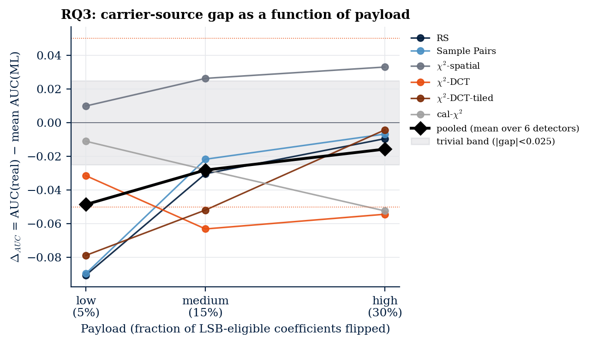
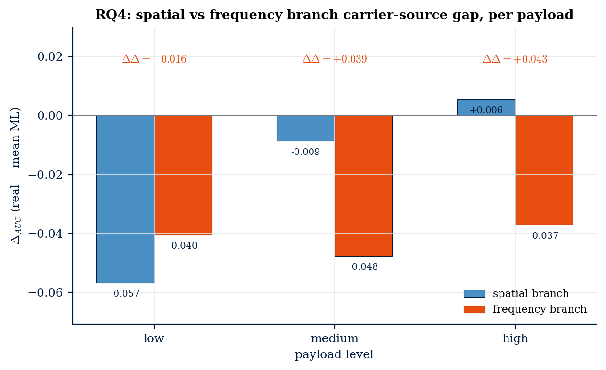
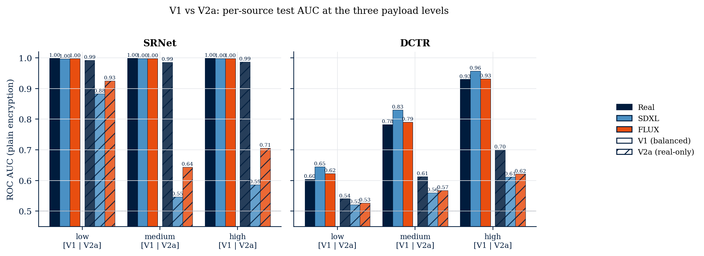

A research study on hiding data in images — and whether we can still catch it.
This is a Project 2.2 study at Maastricht University. We investigate whether the source of a carrier image — a real photograph versus an AI-generated picture — changes how easily hidden data can be detected.
This page walks you through what steganography is, how our experiment works, what we found, and why it matters — no prior knowledge required.
What is steganography?
Steganography is the art of hiding a secret message inside something that looks ordinary. In our case: an image.
You start with a normal-looking picture (the cover). You make tiny, invisible changes to its pixel values to encode your message. The result (the stego image) looks identical to the eye — but the message is in there. Unlike encryption, which hides the content of a message, steganography hides the fact that a message exists at all.
Steganalysis is the opposite job: looking at a suspicious image and asking, "is something hidden inside this?" Detection tools work by spotting the tiny statistical traces that embedding leaves behind — traces too small for the human eye, but visible to math.
So what's the problem?
Almost every detection tool was built and tested on real camera photographs. But today, a huge share of images online are generated by AI — Stable Diffusion, FLUX, Midjourney. These images look real, but their underlying statistics are different. Nobody had systematically tested: do our detection tools still work on them?
Our four research questions
- Does carrier source affect detectability? Real photographs vs. AI-generated images.
- Within AI carriers, does the generator choice matter? SDXL vs. FLUX.
- Does payload size change the gap? Does hiding more data make AI vs. real differ more?
- Do spatial and frequency embedding behave differently? LSB on pixels vs. DCT-LSB on JPEG coefficients.
Our four-stage pipeline
- Collect: Gather 9,000 cover images — 3,000 real photos from COCO and Flickr30k, plus 3,000 each from SDXL and FLUX generated from matching captions.
- Embed: Hide a random payload in every image, under 12 different conditions (two embedding methods × three payload sizes × encrypted or not).
- Detect: Run eight different detectors over every stego and cover image, collecting a suspicion score per image.
- Analyse: Compare detection accuracy (AUC) across carrier sources using paired statistical tests, then aggregate into per-question verdicts.
(3 sources)
evaluated
(6 classical + 2 DL)
The eight detectors we used
We ran six classical (training-free) detectors and two deep-learning detectors on every image. Each one looks at the image in a different way, hunting for the statistical fingerprint that hidden data leaves behind.
Classical detectors (no training needed)
RS Analysis
Counts how often pixel groups become "regular" vs "singular" under a tiny flip. Hidden bits shift the balance in a predictable way.
χ²-Spatial
Looks at pixel-value pairs that should be uneven in natural images. Embedding averages them out — the test spots that.
Sample Pairs
Examines adjacent-pixel differences. Embedded bits leave a measurable trace in the distribution of those differences.
χ²-DCT
Same chi-square idea, but applied to JPEG's compressed frequency coefficients instead of raw pixels.
χ²-DCT (tile-local)
A smarter version that analyses small image tiles separately, catching localised embedding patterns the global test misses.
Calibration-χ²
Compares the suspect image against a slightly-shifted copy of itself. The shift scrambles any hidden data, so any difference between the two views reveals it.
Deep-learning detectors (trained)
SRNet
A convolutional neural network trained on thousands of examples to recognise the visual fingerprint of hidden data.
DCTR
Old-school handcrafted JPEG features fed into a machine-learning classifier — powerful and well-tested in the literature.
What we found, question by question
Does carrier source affect detectability?
Real photographs vs. pooled AI-generated images.

The likely reason: AI generators produce smoother, cleaner images with less natural noise. Real cameras add random sensor noise where hidden bits can hide; AI images don't, so embedding artefacts stand out.
Does the choice of AI generator matter?
SDXL vs. FLUX.
Despite producing visually different images, the two generators leave equivalent statistical fingerprints from a steganalysis standpoint. Detection performance does not depend on which AI generator was used.
Does payload size change the gap?
Low (0.05 bpp) · Medium (0.15 bpp) · High (0.30 bpp).

Intuition: with a small payload, the embedder's fingerprint is subtle — and that subtle signal is easier to spot in clean AI images than in noisy real photos. With a large payload the fingerprint is loud enough that both carriers leak it equally.
Spatial vs. frequency embedding — do they behave differently?
LSB on raw pixels (PNG) vs. DCT-LSB on JPEG coefficients.

So the two domains aren't uniformly better or worse on AI images — their relative advantage shifts with how much data is being hidden.
SRNet "cheats" — and that matters
One of our deep-learning detectors, SRNet, looked spectacular at first — AUC near 1.0 across all three carrier sources. Source-invariant, apparently.

It never learned steganography. It learned to recognise AI images. The moment a deployed detector encounters a new generator it hasn't seen, it will fail silently. This is a serious caution for anyone building learned steganalysis systems.
What it all means
Carrier source affects steganographic detectability — but not as expected. AI-generated images are slightly easier to detect, not harder.
Three concrete conclusions:
- AI carriers are not a safe haven for hiding data. Their cleaner statistics actually expose embedding artefacts more readily than real photos do.
- Generator choice doesn't matter. SDXL and FLUX are interchangeable from a steganalysis perspective.
- Deep detectors that look source-invariant may not be. They might be memorising their training distribution rather than learning steganography.
Future steganalysis benchmarks need to account for carrier origin — not just embedding method and payload size.